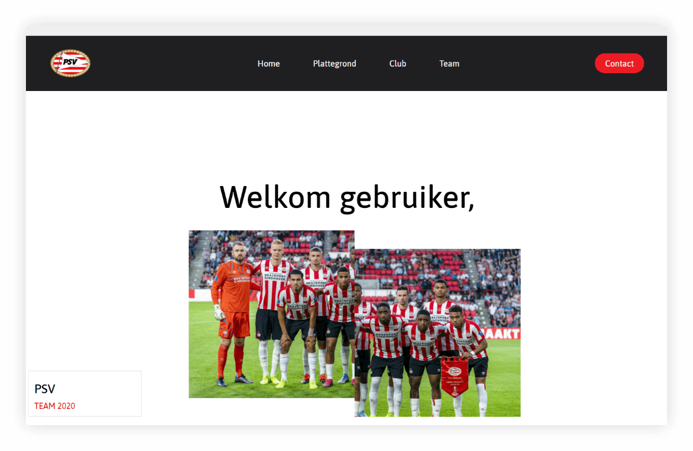

Hey! Ik ben Mark Schuurmans,
Ik ben Mark Schuurmans,
een 16 jarige student op het Koning Willem I College in ’s-Hertogenbosch, waar ik de opleiding Software Developer volg op de ICT-Academie. Ik zit nu in het eerste jaar van deze 4 jarige BOL opleiding. Mijn VMBO-T diploma school heb ik gehaald op het Ds. Pierson college.
Momenteel ben ik de talen HTML, CSS, Javascript, PHP en SQL aan het leren om front-end en back-end websites te kunnen maken, maar wanneer ik niet aan het coderen ben of pixels aan het verschuiven ben, maak ik mijn vrije tijd vol door te gamen en te basketballen, ik ben namelijk lid van basketbal vereniging Den Dungk.
FEATURED PROJECT
Praktijk Opdracht
Het eerste project werd in groepjes van 3 uitgewerkt. Bij dit project was het de bedoeling om een website van een voetbalclub na te maken.
Feat. Bart Strik and Bryan de Wolf
